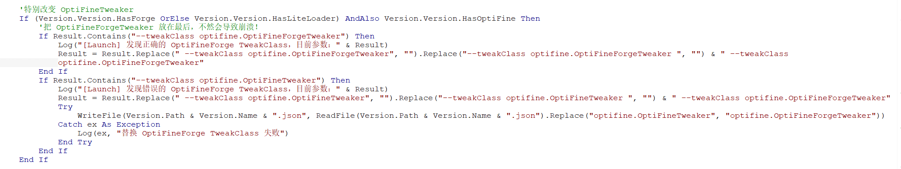

本页将教会大家如何查询并且拼接JVM和Arguments默认启动参数
首先，在Minecraft的版本中，分为这两类启动版本：
- ≤1.12.2
- ≥1.13
这两种启动版本的Json文件很不一样，同时，还有一个地方要注意：
- ≤1.12.2——LiteLoader
我将会直接将其统一放进同一个函数里，因为只需要判定某一个参数即可。所以几乎无需多余的判定。
首先我们要点进Minecraft的1.19.4的版本json文件进行查看。我们可以看到内容大致如下：
{
"arguments": {
"game": [ //有rule的参数为额外参数，直接拼接在game列表中的则是默认参数
"--username",
"${auth_player_name}",
... //其为默认游戏参数【game默认参数在开头】
{
"rules": [
{
"action": "allow",
"features": {
"is_demo_user": true
}
}
],
"value": "--demo"
},
... //其为额外游戏参数
],
"jvm": [
{ //jvm的额外参数在顶上，默认参数在下面。
/*
有部分JVM参数包含rules键值，我们在拼接启动参数的时候需要考虑这种情况：
1.rules是一个Json列表的形式
2.如果rules里面有一个值的action为disallow，则在这以下的os键值对里的name所指代的操作系统无需拼接此参数。反之亦然。
3.有些rules键值里面的value是个数组类型，我们在实际情况下也应该考虑这种情况。
*/
"rules": [
{
"action": "allow",
"os": {
"name": "osx"
}
}
],
"value": [
"-XstartOnFirstThread"
]
},
... //其为额外jvm参数，其中由os键中的osx代表的是Macos的参数，linux则是Linux的参数，windows则是Windows参数，arch: x86则代表了32位系统。
// 然后，version键值只在Windows出现，而且：【^10\】代表了其需要Windows 10版本以上才需要添加。
"-Djava.library.path=${natives_directory}",
... //其为默认jvm参数
]
},
"assetIndex": {
"id": "3",
"sha1": "0e432ccd3ef65853034193811d92ac47d0b7ca5d",
"size": 409894,
"totalSize": 555638139,
"url": "https://piston-meta.mojang.com/v1/packages/0e432ccd3ef65853034193811d92ac47d0b7ca5d/3.json"
}, //其为Minecraft所需要的资源索引json文件。
"assets": "3",
"complianceLevel": 1,
"downloads": {
"client": {
"sha1": "958928a560c9167687bea0cefeb7375da1e552a8",
"size": 23476620,
"url": "https://piston-data.mojang.com/v1/objects/958928a560c9167687bea0cefeb7375da1e552a8/client.jar"
},
... //其为Minecraft所需要的原版jar文件和原版mapping映射表下载地址。
},
"id": "1.19.4", //其为Minecraft的游戏id【一般随着Minecraft的版本命名而区分。】
"javaVersion": {
"component": "java-runtime-gamma",
"majorVersion": 17
}, //其为Minecraft所需要的Java运行时环境，component为MC官方提供的下载源中需要的环境依赖。【这个后期说道自动下载Java时会说道。】
"libraries": [
{
"downloads": {
"artifact": {
"path": "ca/weblite/java-objc-bridge/1.1/java-objc-bridge-1.1.jar",
"sha1": "1227f9e0666314f9de41477e3ec277e542ed7f7b",
"size": 1330045,
"url": "https://libraries.minecraft.net/ca/weblite/java-objc-bridge/1.1/java-objc-bridge-1.1.jar"
}
},
... //其为Minecraft所需的所有类库文件，其中包含了资源名称，downloads键下还有artifact键，里面有资源保存路径、资源sha1、资源大小、资源下载网址等。
/*
有部分类库文件包含rules键值，我们在拼接启动参数的时候需要考虑这种情况：
1.rules是一个Json列表的形式
2.如果rule里面有一个值的action为disallow，则在这以下的os键值对里的name所指代的操作系统无需拼接此参数。反之亦然。
*/
}
],
"logging": {
"client": {
"argument": "-Dlog4j.configurationFile=${path}",
"file": {
"id": "client-1.12.xml",
"sha1": "bd65e7d2e3c237be76cfbef4c2405033d7f91521",
"size": 888,
"url": "https://piston-data.mojang.com/v1/objects/bd65e7d2e3c237be76cfbef4c2405033d7f91521/client-1.12.xml"
},
"type": "log4j2-xml"
} //Minecraft Log4J配置文件路径，这个一般时用于记录玩家客户端执行的，一般我们不需要将其包含进启动参数内，因此这一整个logging键值没用。
},
"mainClass": "net.minecraft.client.main.Main", //Minecraft主类【需要添加进启动参数】
"minimumLauncherVersion": 21, //Minecraft最小启动器版本【一般指的是官启版本（猜的】
"releaseTime": "2023-03-14T12:56:18+00:00", //发布时间
"time": "2023-03-14T12:56:18+00:00", //与上面相同
"type": "release" //发布类型【如果是snapshot，就会显示snapshot，但1.19.4是release发布版。】
}
以上是我们的Minecraft原版Json文件，这个文件如何获取的晚点我会和大家娓娓道来，大家只需要先学习我们如何根据这个Json文件进行启动游戏的就好了！
在使用Delphi自带的JSON库时，大家需要在自己的头文件中引用一个单元文件。键入以下单元即可：
uses
JSON;
然后，首先我们要写一个函数，这个函数的名字就叫做：【selectParam】
我们将这个函数放进我们的自制类里面。可以选择放在private，也可以选择放在public，那我这里就选择放在public里了吧！
type
TForm1 = class(TForm)
Button1: TButton;
ComboBox1: TComboBox;
procedure FormCreate(Sender: TObject);
private
{ Private declarations }
public
{ Public declarations }
end;
Launcher = class
private
public
function SelectParam(json: TJsonObject): string;
end;
在Delphi里面，函数的意思是有返回值的方法，使用function定义，而过程是没有返回值的方法，用procedure定义。我们上面定义的是function，因此这是个函数。
然后，我们的参数列表中填入的是一个TJsonObject类型的，意味着我们这个参数是一个Json对象。我们需要将字符串转换成Json对象才能传参。
紧接着，我们就要开始实现这个函数了。我们在implementation下方依旧如同上方一样实现上述Launcher类里的SelectParam函数。请看示例
function Launcher.SelectParam(json: TJsonObject): string;
begin //开头的函数得与你在类中定义的函数一致。
result := ''; //此处设置该函数返回值默认值为空值。
var param := '-XX:+UseG1GC ' + //每一个参数末尾都需要加上空格。
'-XX:-UseAdaptiveSizePolicy ' +
'-XX:-OmitStackTraceInFastThrow ' +
'-Dfml.ignoreInvalidMinecraftCertificates=True ' +
'-Dfml.ignorePatchDiscrepancies=True ' +
'-Dlog4j2.formatMsgNoLookups=true '; //这些都是我们需要的默认JVM参数。因为PCL2添加了这些参数，仅此而已啦！
// param := param + additionJVM;
//该处，如果你想为Minecraft手动添加额外JVM参数，可以在这里写。同时参数也可以多添加一个additionJVM，类型String来添加。也可以添加全局变量。我就不添加了，我不太想。
param := param + '-XX:HeapDumpPath=MojangTricksIntelDriversForPerformance_javaw.exe_minecraft.exe.heapdump '; //由于我们这个启动器面向的是Windows，自然，对于Windows的这个额外JVM参数，我们需要将其当作默认JVM参数添加进入。
if Win32MajorVersion = 10 then param := param + '"-Dos.name=Windows 10" -Dos.version=10.0 ' ;
//该处使用了Delphi内置函数Win32MajorVersion来判断电脑的操作系统版本，如果是Windows10，则拼接下面两个参数，反之不拼接。
var judge: boolean; //在外部定义一个judge判断布尔变量
var argu: TJsonObject; //在外部定义一个argu的Json对象变量。
try
judge := false; //给外部定义的judge变量初值设为false。
argu := json.GetValue('arguments') as TJsonObject; //通过传入的Json参数获取里面的arguments键，然后将其转换成Json对象形式。传到外面。
var jvm := argu.GetValue('jvm') as TJsonArray; //再通过arguments对象进入jvm键值对里面，将其转换成Json数组。
if jvm.Count = 0 then raise Exception.Create('No jvm arguments'); //如果jvm列表内元素为空，则抛出报错，执行except语句，将judge返回true。
for var i in jvm do begin //使用循环遍历jvm参数
if i.ToString.IndexOf('rules') <> -1 then continue; //一旦遇到了rules键值，则判定此为额外JVM参数，故暂不添加进param中。
param := param + i.Value.Trim + ' '; //末尾需要加上空格。并且需要去除掉在默认参数中的空格。
end;
except
judge := true; //如果找不到arguments键，或者arguments键中的jvm值不存在，或者为空，则抛出报错。
end;
if judge then begin //如果judge为true，意味着上面jvm参数拼接失败，则执行。
param := param + ' -Djava.library.path=${natives_directory} -cp ${classpath} ';
judge := false;
end; //上述代码为Minecraft主动添加了JVM参数，此处一般是用于判断版本是否小于1.12.2。
param := param + '${authlib_injector_param}'; //这里需要添加一个Authlib-Injector，这个我们晚点再说！晚点到登录到Authlib-Injector时再说吧！
try
param := param + '-Xmn256m -Xmx' + MaxMemory + 'm ' + json.GetValue('mainClass').Value + ' ';
//上述代码给MC启动参数总添加了几行默认游戏参数，其中包括了最小内存、最大内存、主类。且如果无法从json文件中找到mainClass键，则抛出报错。错误见下。
except
messagebox(0, '无法拼接mainClass主类参数，参数拼接失败。', '无法拼接参数', MB_ICONERROR); //此处显示一个信息框，无法拼接主类参数。
exit; //退出该函数。
end;
try //该try语句是适配1.13版本以上的版本。
var game := argu.GetValue('game') as TJsonArray; //进入了arguments后，我们再接着通过这个arguments对象进入game键值对里面，然后将其转换成Json数组形式。
if game.Count = 0 then raise Exception.Create('No game arguments');
for var i in game do begin //使用相同的手段将game参数拼接到jvm参数的后面。
if i.ToString.IndexOf('rules') <> -1 then continue;
param := param + i.Value.Trim + ' ';
//末尾需要加上空格。并且需要去除掉在默认参数中的空格。目的请看Fabric的版本Json文件。其中有一个-DFabricMcEmu键，后面跟了空格，因此这里需要对此进行空格清除。
end;
except
end;
try //在这里实则判断param中是否有minecraftArguments值，以适配1.12.2以下版本
var mcargu := json.GetValue('minecraftArguments').Value; //开始判断是否有
if mcargu = '' then raise Exception.Create('No 1.12.2 Arguments');
//如果没有这个键，或者这个键为空，则抛出报错，自动执行except语句，然后except语句内啥也没有，就接着往下执行。
param := param + mcargu; //此处如果有则拼接这个参数。
//json中的键值对'minecraftArguments'就是在1.12.2以下版本所用的启动参数。这一串代码实则判断假如MC版本小于等于1.12.2，则主动拼接这个参数。
except //此处不用设置judge了。
end;
if judge then begin //此处为当未能拼接任意默认游戏参数时抛出的报错。
messagebox(0, '无法拼接默认游戏参数，参数拼接失败。', '无法拼接参数', MB_ICONERROR); //这里置一个信息框。
exit; //退出该函数
end;
result := param; //将参数当作返回值返回。
end;
我相信，这些注释足以使玩家明白其中的道理。如果大家觉得用电子书没有换行看着太麻烦，大家可以将其复制进记事本中慢慢观看哦！
噢，好像发现了一件事！我通过查看PCL2的源码时，发现了一个非常神奇的一幕：请看截图： 
我们在这个截图里，发现了其实在拼接Optifine Forge和仅安装了Optifine的时候，参数里可能会有两个或以上的--tweakClass作为启动参数，然后Optifine可能不会是最后一个，因此我们需要手动将该参数放到最后，这样才不会启动失败！
我们首先来尝试一下：
...//前面的代码：我们直接在我们上面的result := param的上面一句直接写：
if param.Contains('--tweakClass optifine.OptiFineTweaker') or param.Contains('--tweakClass optifine.OptiFineForgeTweaker') then begin
param := param.Replace('--tweakClass optifine.OptiFineTweaker', '').Replace('--tweakClass optifine.OptiFineForgeTweaker', '') + '--tweakClass optifine.OptifineForgeTweaker';
end;
result := param;
简单来说，上面的函数我们一句参数，我们将optifine的tweakClass放到最后了！就是首先replace掉所有的--tweakClass optifine的，然后将正确的参数拼接在后面。
我们上述的代码中，其实已经将所有的版本都支持进去了，包括forge、Fabric、Quilt、LiteLoader等都可以正常的拼接启动参数了。包括MC的从远古版本到最新版本的启动参数支持都在这一个函数里哦！
大家只需要看个逻辑就好，完全可以翻译成自己的编程语言进行开发哦！现在大家能领略Delphi的魅力了吗？与C#、Java等语言是否觉得比较相同呢？